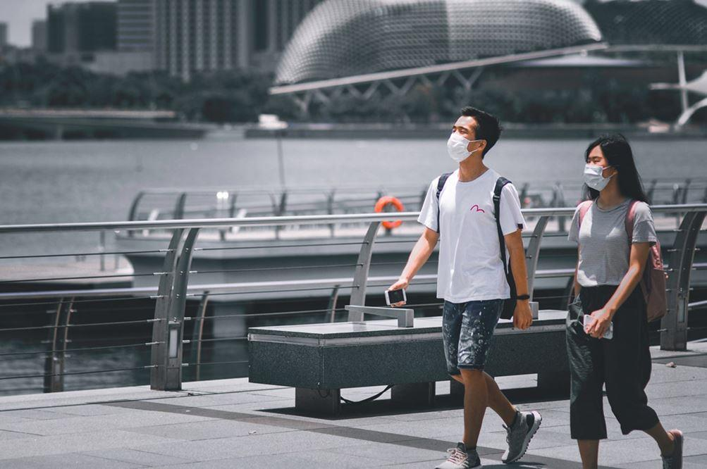
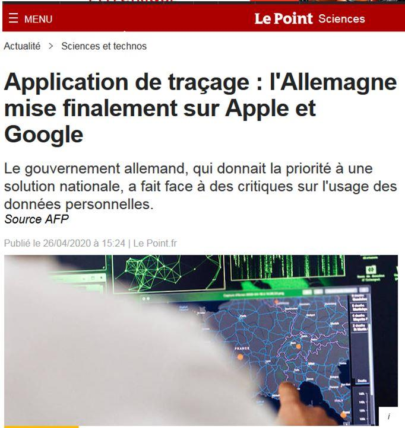
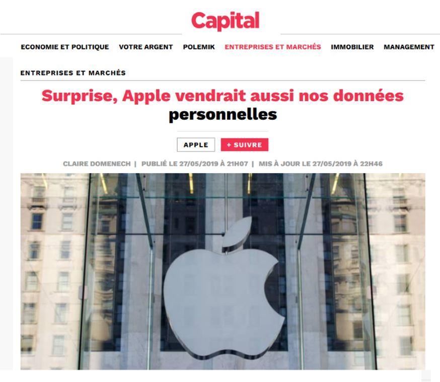

Le gouvernement français travaille actuellement à la création d’une application de traçage numérique, baptisée StopCovid. Le mardi 28 avril, l’Assemblée nationale est appelée à se prononcer sur le plan de déconfinement ainsi que sur ses « innovations numériques dans la lutte contre l’épidémie de covid-19 ». Nous appelons les députés à voter massivement contre et les Français à prendre la mesure du danger qu’une telle initiative fait courir à nos libertés et à nos droits. Définition, acteurs impliqués, effets sur nos vies, risques éthiques, garde-fous techniques, garde-fous institutionnels, préparation de l’avenir : tous les aspects sont passés en revue. Cette note explique pourquoi il faut dire non au projet du gouvernement.
Beaucoup de voix se sont déjà fait entendre sur la question du traçage numérique dans le cadre de la lutte contre l’épidémie du coronavirus. Des outils de suivi des populations sont déjà en vigueur en Chine, à Singapour ou en Corée du sud mais également en Europe, en Pologne et en Italie depuis peu.
Présenté dans un premier temps comme « contraire à la culture française » par le ministre de l’intérieur, le projet d’un outil de traçage, baptisé StopCovid, s’est vite imposé à l’exécutif après le vote de la loi d’« urgence sanitaire » le 23 mars dernier. Il a pris forme notamment grâce à la contribution de Mounir Mahjoubi, député (LREM) de Paris, ancien président du Conseil national du numérique et ancien Secrétaire d’État chargé du numérique qui a présenté un plan d’action très complet le 6 avril dans une note parlementaire intitulée Traçage des données mobiles dans la lutte contre le Covid-19. Depuis, le projet prend chaque jour plus de réalité.
Le mardi 29 avril, le Premier ministre présentera devant l’Assemblée nationale une Déclaration du gouvernement « relative à la stratégie nationale du plan de déconfinement ainsi qu’aux innovations numériques dans la lutte contre l’épidémie de covid-19 », suivie d’un débat et d’un vote. Nous appelons les députés à voter massivement contre. Nous appelons les Français à s’élever contre une initiative qui, au nom de la lutte contre le virus, constitue un danger inédit pour les libertés individuelles et les libertés fondamentales. Outre les atteintes à nos libertés concrètes (liberté de circulation, vie privée, données), la création d’un tel outil fait courir de trop grands risques éthiques et politiques à la nation. Les garde-fous légaux et techniques mis en avant par les défenseurs du projet (volontariat, Bluetooth et anonymisation des données), sont largement insuffisants. Les garde-fous institutionnels (Conseil constitutionnel par exemple) ne remplissent plus leur fonction traditionnelle du fait de l’« état d’urgence ».
La rapidité avec laquelle la France, comme la plupart des pays européens, a basculé dans ce cauchemar numérique est extrêmement inquiétante. Elle justifie un « non » clair et sonore au projet de l’exécutif. Elle réclamera de prendre des initiatives massives et courageuses en faveur de la protection de nos libertés numériques dans un second temps. Explications en dix points clés.
1. Le traçage numérique, qu’est-ce que c’est ?
Le traçage numérique (en anglais, tracking), est une méthode employée pour connaître les déplacements des populations. Le « retour sur trace » ou « retour arrière » (en anglais, backtracking) permet quant à lui d’identifier les relations interpersonnelles des individus tracés par le système. Le terme « trace numérique » désigne toutes les informations qu’un dispositif numérique enregistre sur l’activité ou l’identité de son utilisateur au moyen de traceurs tels que les cookies, soit automatiquement, soit par le biais d’un dépôt intentionnel. Moteurs de recherche, blogs, réseaux sociaux, sites de commerce électronique, mais aussi cartes à puce, titres de transport, téléphones mobiles : tous les systèmes qui requièrent une identification ou une interaction sont susceptibles de capter des informations sur l’utilisateur – parcours, requêtes, préférences, achats, connexions, évaluations, coordonnées. Les traces ne sont pas des messages, mais des données qui, prises isolément, n’ont guère de sens mais qui, regroupées, traitées et combinées dans d’importantes bases de données, peuvent révéler des informations significatives, stratégiques ou sensibles.
La technologie du traçage numérique n’est pas nouvelle en France puisqu’elle est déjà utilisée pour les personnes détenues à qui il est proposé, sous certaines conditions, le port d’un « bracelet électronique » ou Placement sous Surveillance Électronique (PSE)1. Il s’agit d’un régime instauré par la loi du 12 décembre 2005 sur la récidive des infractions pénales et élargi à la « surveillance de sûreté » par la loi n° du 25 février 2008 relative à la rétention. Le 21 avril, Ludovic Le Moan, président de la société Sigfox, spécialiste français des réseaux très bas débit pour les objets connectés, a proposé la distribution d’un bracelet électronique, comme alternative à une application de traçage numérique, à tous les Français dans la perspective du déconfinement2. C’est déjà le cas à Hong-Kong, où le port d’un capteur au poignet a été imposé aux personnes en quarantaine, et des tests sont en cours au Liechtenstein et en Corée du Sud pour certaines catégories de personnes considérées comme « à risque ».

2. En quoi consiste le projet d’application StopCovid du gouvernement ?
Il s’agit d’un projet d’application, faisant appel au système Bluetooth (Point 6), de « suivi de contacts » (ou « contact tracing »), c’est-à-dire de traçage des personnes et de leurs relations interpersonnelles grâce à leurs smartphones afin de pouvoir suivre les malades et les personnes qu’ils sont susceptibles d’avoir infectées lors de leurs déplacements quotidiens. Selon Cedric O, secrétaire d’État chargé du numérique et Olivier Véran, ministre de la santé, « l’idée serait de prévenir les personnes qui ont été en contact avec un malade testé positif afin de pouvoir se faire tester soi-même, et si besoin d’être pris en charge très tôt, ou bien de se confiner »3.
Ce type de dispositifs existe déjà dans certains pays. Il peut être obligatoire (comme en Chine, en Corée du Sud, à Taiwan, en Pologne ou en Israël) ou facultatif avec des degrés d’incitation variables (comme à Singapour). Si le gouvernement français, qui travaille actuellement avec d’autres gouvernements européens, se veut rassurant en expliquant que le dispositif sera basé sur le volontariat des personnes, il convient de rappeler que ces outils, du plus doux au plus contraignant, sont cumulables entre eux et reposent sur les mêmes prérequis : identifier les personnes, les suivre dans leurs déplacements et leurs relations interpersonnelles et, éventuellement, contrôler leur lieu de résidence.
3. Qui sont les acteurs impliqués dans le traçage numérique ?
Dans sa note intitulée « Traçage des données mobiles dans la lutte contre le Covid-19 », le député de Paris (LREM) Mounir Mahjoubi explique que les données de cartographie des mobilités collectives sont déjà très largement utilisées, notamment par les collectivités locales qui les rachètent aux opérateurs téléphoniques (en particulier pour analyser les flux touristiques). Il propose d’utiliser les données de cartographie des mobilités individuelles et précise que « de nombreux opérateurs mobiles et fournisseurs d’application se disent disposés à travailler avec les autorités sanitaires ». Il explique en effet que « pour transmettre ou recevoir de l’information, qu’il s’agisse d’un appel, d’un SMS ou d’un accès à Internet, les téléphones mobiles se connectent à l’antenne relais la plus puissante étant à leur proximité. Lors des transferts de données, les opérateurs enregistrent des informations de connexion et les conservent en mémoire durant une année. Il leur est alors possible d’attester de la présence d’un téléphone autour d’une borne, dans un périmètre donné, avec un historique de 12 mois. Orange, Free, SFR et Bouygues Télécom se partagent en France 40 000 pylônes relais »4.
Pour pouvoir mettre en place un système de traçage numérique, la participation et l’accord de plusieurs acteurs est en effet nécessaire : l’Union européenne en premier lieu afin de déroger aux règles de la protection des données personnelles (RGPD), les acteurs du numérique afin de concilier les outils de traçage créés avec les systèmes d’exploitation des smartphones, les États européens pour rendre compatible les différents systèmes entre eux dans l’hypothèse de permettre la libre circulation des personnes et enfin les opérateurs téléphoniques pour avoir accès à leurs données globales de cartographie des populations. Rapide tour d’horizon des forces en présence.
L’UNION EUROPÉENNE
Le 20 mars dernier, le Comité européen de la protection des données (CEPD, en anglais European Data Protection Board) a levé l’interdiction sur l’échange et le traitement des informations personnelles des citoyens membres de l’Union européenne, en indiquant que « le RGPD permettait aux autorités sanitaires compétentes de traiter les données personnelles dans le contexte d’une épidémie, conformément au droit national et dans les conditions qui y sont fixées »5. Le 23, Thierry Breton, Commissaire européen chargé du marché intérieur et du numérique, a demandé aux opérateurs mobiles européens de fournir aux États membres qui le souhaitent les données de géolocalisation de leurs clients6.
LES ACTEURS DU NUMÉRIQUE
Apple et Google ont annoncé le 10 avril une démarche commune visant à la mise en place d’une infrastructure logicielle pour les applications de « traçage social », dans le cadre de la lutte contre l’épidémie de Covid-197. Il aura finalement fallu moins de vingt jours entre la décision du CEPD et l’annonce de la collaboration des deux géants du numérique. Cette annonce ne pose pourtant rien de moins que les bases d’un système mondial de traçage des populations et de partage de leurs données8.
LES ÉTATS
Il y a quelques jours, Cédric O, secrétaire d’État chargé du numérique, annonçait que l’Allemagne, la France, l’Italie, Monaco, le Royaume-Uni et la Suisse étaient en pourparlers pour développer ensemble un système de traçage numérique propre, ne faisant pas appel à la solution proposée par Apple et Google :
« C’est une question de souveraineté sanitaire et technologique », argumentait-il9.
Le 26 avril, l’Allemagne a annoncé sa sortie du consortium et son ralliement à la solution des deux géants du web : « notre objectif est que l’application de traçage soit prête à être utilisée très bientôt et qu’elle soit largement acceptée par la population », ont déclaré Jens Spahn, ministre de la Santé, et Helge Braun, chef de cabinet de la chancelière Angela Merkel10. Alors qu’elle était l’un des premiers pays européens à y avoir réfléchi, la Belgique a annoncé qu’elle renonçait à ses projets11.
LES OPÉRATEURS TÉLÉCOMS
Le 17 avril dernier, le PDG d’Orange Stéphane Richard déclarait au micro de la radio France Inter : « Aujourd’hui, on a un prototype d’application qui fonctionne »12. Il s’est dit prêt à apporter l’expertise de son groupe à l’application « StopCovid » souhaitée par l’exécutif. Le patron d’Orange milite pour le recours au Bluetooth.
4. Liberté de circulation, vie privée, données : quels effets du traçage numérique sur nos vies ?
Au niveau individuel, les effets potentiels du traçage numérique sur nos vies sont multiples. On se contentera ici de les synthétiser en quatre points.
Le traçage numérique représente intrinsèquement une atteinte majeure à la liberté fondamentale d’aller et venir. A ce stade, il est certes basé sur le volontariat (Point 2) mais il est également présenté comme l’une des conditions nécessaires à un déconfinement réussi : rien ne garantit donc que l’utilisation de ce dispositif ne deviendra pas obligatoire demain, en cas de deuxième vague ou de nouvelle épidémie.
Cela représente également une atteinte à la vie privée puisque les relations interpersonnelles de l’utilisateur et ses déplacements seront connus au travers des échanges continus entre le smartphone de l’utilisateur et tous les objets connectés qu’il va rencontrer dans une journée.
Cela permettra en outre à de multiples applications autres que StopCovid de collecter des données dans l’hypothèse où le protocole Bluetooth de l’utilisateur sera activé en permanence. Il y a un risque de concaténation des données brutes collectées par les acteurs du numérique ; ce qui leur permettrait d’établir de futurs profils numériques et d’accéder aux données de santé, qui les intéressent particulièrement alors qu’elles étaient jusqu’ici souvent hors d’atteinte.
Il y a enfin un risque non négligeable que l’exception devienne la règle et que ce type d’outils soit dans le futur utilisé pour de multiples usages, toujours bien sûr au nom de la sécurité des participants et des autres : suivi des manifestations de rue, suivi des supporters dans les manifestations sportives, suivi des participants aux grands événements culturels comme les festivals, etc.
5. Désignation du « bon citoyen », risque de bascule vers un système obligatoire et menaces sur l’après-crise : le traçage numérique soulève de graves risques éthiques
Les technologies de traçage numérique soulèvent des risques éthiques majeurs. De fait, ce type d’outils permet de retrouver les personnes qui ont été en contact avec une personne porteuse du Covid-19 et de retracer les déplacements de cette dernière. Mais dans quel but ? Faire respecter le confinement et automatiser et simplifier les contrôles que les forces de l’ordre se refusent à faire par manque de moyens et de matériels de protection13. Allons jusqu’au bout de la logique : une automatisation des sanctions n’est-elle pas à craindre en cas de déplacements interdits ?
C’est là qu’on atteint le point de bascule éthique. Si la comparaison avec le système de « crédit social » chinois paraît encore excessive à certains14, force est de constater que la logique du traçage numérique nous en rapproche : il n’y a certes pas de notation des comportements mais cette pente mène à dresser le portrait du « bon citoyen » et, par contraste, celui du « mauvais citoyen ». Les autorités argueront naturellement que leur intention est à cent lieues de cela.
Mais en matière de libertés, on ne juge pas des intentions mais des actes.
Ensuite, quelle garantie a-t-on qu’à une première phase basée sur le volontariat, ne succèdera pas, dans l’hypothèse où elle ne permettrait pas d’atteindre l’objectif attendu, une seconde phase obligatoire ? Le débat est d’ores et déjà posé en Italie, où certains plaident pour que l’application de traçage Immuni soit obligatoire dès sa mise en service et pour que le port du bracelet électronique soit imposé aux personnes âgées15.
Mais la question éthique la plus importante est la suivante : une fois le Rubicon franchi, que se passera-t-il ? Qui peut sincèrement imaginer que l’on rangera ces outils technologiques dans la boîte de Pandore que l’on vient d’ouvrir parce que la crise sanitaire sera achevée ? Dans les pages du Financial Times du 19 mars dernier, Yuval Noah Harari mettait en garde : « les mesures prises dans l’urgence ont la mauvaise habitude de rester en place même après l’urgence, d’autant qu’il y a toujours de nouvelles menaces »16. L’histoire récente lui donne hélas raison : il y aura toujours une autre crise, un autre attentat, une autre urgence pour justifier l’usage de ces technologies. Que s’est-il passé avec les lois antiterroristes et les mesures prises dans le cadre de l’état d’urgence en France entre 2015 et 2017 ? Elles ont été en grande partie intégrées au Code de la Sécurité intérieure. Le temporaire est devenu permanent.
Pourquoi demain, l’urgence politique, économique et sociale ne justifierait-elle pas le recours au traçage dans les domaines du terrorisme, du blanchiment d’argent, de la lutte contre la fraude fiscale, du travail dissimulé, de la prostitution ou du trafic d’être humain, voire tout simplement de l’absentéisme scolaire ?
6. Bluetooth et anonymisation des données : l’illusion des garde-fous techniques
Les défenseurs du projet mettent en avant deux garde-fous techniques en réponse aux inquiétudes éthiques et politiques qui se manifestent contre le projet d’application StopCovid : l’utilisation de la technologie Bluetooth et l’anonymisation des données.
Le Bluetooth est une norme de communication permettant l’échange bidirectionnel de données à très courte distance en utilisant des ondes radio UHF (ultra haute fréquence). Elle sert à simplifier les connexions entre les appareils électroniques en supprimant des liaisons filaires. L’idée du gouvernement est de s’appuyer sur le protocole Robert (pour ROBust and privacy-presERving proximity Tracing), récemment développé par l’INRIA (Institut national de recherche en sciences et technologies du numérique, France) et la Fraunhofer AISEC (Allemagne) dans le cadre de l’initiative PEPP-PT (Pan-European Privacy-Preserving Proximity Tracing). Selon ses créateurs, ce protocole « pourra être utilisé pour la construction d’applications mobiles de suivi de contacts. Il a été conçu pour respecter strictement le cadre européen de protection des données et pouvoir être résistant à des attaques crédibles »17. Il n’y aurait donc pas de problème à utiliser le Bluetooth. C’est également l’avis de Mounir Mahjoubi qui, dans sa note parlementaire affirme que « les applications Bluetooth de contact tracing semblent créer un consensus du fait de leur aspect plus protecteur [que le GPS] des libertés individuelles »18.
Plus protecteur que le GPS mais pas très protecteur quand même ! Chacun sait que le Bluetooth est un aspirateur permanent de données brutes. Les spécialistes parlent même de « protocole bavard », cherchant en permanence à s’appairer avec les autres outils disposant de ce protocole : ce qui est logique puisque c’est sa fonction première19. Cela signifie que l’appareil connecté (ici le smartphone) interagira avec tous les autres appareils connectés, pas uniquement ceux dotés de l’application StopCovid.
Pendant ce temps, des quantités illimités de données brutes seront collectées par les géants du numérique sur nos smartphones. Les géants du numériques font déjà cela en temps normal mais, avec l’obligation de maintenir le Bluetooth activé, le phénomène ne pourra que s’accroître. Pour s’en convaincre, il suffit de se remémorer quelques scandales récents : celui de Cambridge Analityca en 2018, dans lequel
Facebook a été accusé d’avoir récupéré, sans leur consentement, les données personnelles de cinquante millions d’utilisateurs20; celui de la mise en cause de Google avec le projet Nightingale qui a capturé les données de santé de millions d’Américains21; ou encore celui d’Apple accusé dans le cadre d’une plainte collective de revendre les données personnelles des utilisateurs d’iTunes22.
Selon le cabinet Strategy Analytics, il y aurait 22 milliards d’objets connectés dans le monde (smartphones, enceintes, téléviseurs, montres, tablettes, ordinateurs, consoles de jeux, alarmes, caméras, distributeurs automatiques, bornes de transports en commun, etc.) et il y en aura environ 50 milliards d’ici 203023. Ils n’utilisent pas tous le système Bluetooth mais, afin d’être compatibles avec les smartphones, la plupart le sont.
Enfin, dernier point et non des moindres, le système Bluetooth est piratable comme tous les systèmes et de nombreuses failles de sécurités sont régulièrement découvertes. La dernière remonte d’ailleurs à quelques semaines : en février 2020, Google a publié un correctif pour une faille critique qui touche le sous-système Bluetooth d’Android et permet potentiellement de prendre le contrôle de tout appareil vulnérable à portée. Les spécialistes ont alors conseillé aux utilisateurs d’Android de désactiver le Bluetooth en attendant de recevoir la mise à jour24.
Il en va de même pour l’anonymisation des données. Elle constitue une défense bien fragile. Le bouclier européen du RGPD – dorénavant suspendu, rappelons-le – constituait déjà une ligne de défense largement dépassée puisque, si elle garantissait les individus contre l’arbitraire de fichages que l’on peut qualifier de basiques (sexe, race, orientation sexuelle, tendance politique ou syndicale, etc.), elle ne constituait en rien une protection efficace contre la « concaténation » de données brutes non personnelles qui, une fois agrégées et reconstituées, permettent d’arriver au même résultat25.
En effet, en assemblant une foule de données concernant par exemple nos déplacements (de notre lieu d’habitation, de travail, de vacances, etc.), nos habitudes (types de produits consommés, requêtes sur les moteurs de recherche, etc.), les personnes que nous rencontrons (croisements de données de plusieurs utilisateurs), les paiements que nous effectuons, nos heures de réveil et de coucher, le tout recoupé avec les données brutes équivalentes des autres occupants de notre domicile ou des autres salariés de notre entreprise (également équipés d’appareils connectés), les géants du numérique peuvent déjà obtenir un profilage non-personnel plus efficace, plus précis et possédant une valeur marchande bien plus importante que les quelques données personnelles protégées par le RGPD.
Mais au-delà, avec les interactions Bluetooth permanentes, il sera extrêmement simple d’identifier un individu. Luc Rocher, chercheur à l’ICTEAM (Institute of Information and Communication Technologies, Electronics and Applied Mathematics) de l’Université catholique de Louvain, affirme en effet qu’« aux USA – nous avons notamment travaillé sur des données américaines –, quinze informations démographiques (âge, sexe, etc.) suffisent pour que la ré-identification soit possible dans 99,98% des cas », en partant de données brutes non personnelles et anonymisées26. Quinze informations ? L’application StopCovid, avec l’activation permanente du Bluetooth, permettra d’en collecter des centaines par jour, voire des milliers.
7. CNIL, Conseil d’État et Conseil constitutionnel : les garde-fous institutionnels regardent ailleurs
Face à l’initiative de l’exécutif, on pourrait s’attendre à ce que certaines institutions ou certaines autorités s’élèvent au nom de la préservation de nos libertés et de nos droits fondamentaux. Ce serait sans doute le cas en temps normal – du moins faut-il l’espérer… En situation d’« état d’urgence » sanitaire, il en va hélas différemment.
LA COMMISSION NATIONALE DE L’INFORMATIQUE ET DES LIBERTÉS (CNIL)
Lors de son audition au Sénat le 16 avril dernier, Marie-Laure Denis, présidente de la CNIL, a certes demandé de privilégier « les solutions les moins intrusives », insisté sur le « caractère temporaire » que devra avoir l’application StopCovid et réclamé « une suppression des données » à l’issue de la crise. Elle a également souligné les limites de l’outils au regard des zones blanches numériques et du déficit d’équipement de certaines personnes (notamment les personnes âgées). Mais elle ne s’est pas montrée particulièrement offensive dans la défense des libertés des citoyens et n’a pas un instant discuté le principe même du traçage numérique.
Cette frilosité est conforme à l’évolution de la doctrine de la CNIL (qui a bien changée depuis la grande loi fondatrice du 6 janvier 1978 relative à l’informatique, aux fichiers et aux libertés) et de ses missions sous l’influence de la législation de l’Union européenne, qui a progressivement imposé une logique de droit commercial primant sur la protection des libertés publiques. Depuis l’apparition du RGPD et son système de sanction économique auprès des entreprises, la CNIL est passée d’un rôle de gardienne des libertés publiques à celui de garant du droit de la concurrence. Les propos de Marie-Laure Denis confirment simplement cette évolution.
Sous le poids des critiques, la CNIL a nuancé dix jours plus tard la position de sa présidente en appelant formellement « à la vigilance » et en soulignant « que l’application ne peut être déployée que si son utilité est suffisamment avérée et si elle est intégrée dans une stratégie sanitaire globale. Elle demande certaines garanties supplémentaires ». Elle demande « à pouvoir se prononcer à nouveau après la tenue du débat au Parlement, afin d’examiner les modalités définitives de mise en œuvre du dispositif, s’il était décidé d’y recourir »27.
LE CONSEIL D’ÉTAT
Le 18 mars, le Conseil d’État a rendu son avis sur le projet de loi et le projet de loi organique d’urgence pour faire face à l’épidémie de Covid-19, présenté par le gouvernement. Sans grande surprise, le Conseil les a approuvés28. Il a appliqué sa jurisprudence classique en cas de « circonstances exceptionnelles », à savoir que « l’existence de circonstances exceptionnelles est de nature à justifier des mesures qui seraient, dans des circonstances normales, considérées comme illégales »29. Il convient néanmoins de rappeler que cette jurisprudence fut élaborée pour répondre à l’urgence pendant la Première guerre mondiale30. On peut donc s’étonner de son application à une crise sanitaire.
LE CONSEIL CONSTITUTIONNEL
Le Conseil constitutionnel a été saisi cinq jours plus tard. Dans sa décision, il valide la position du Conseil d’État : « Afin de faire face aux conséquences de l’épidémie du virus covid-19 sur le fonctionnement des juridictions, l’article unique de cette loi organique se borne à suspendre jusqu’au 30 juin 2020 le délai dans lequel le Conseil d’État ou la Cour de cassation doit se prononcer sur le renvoi d’une question prioritaire de constitutionnalité au Conseil constitutionnel et celui dans lequel ce dernier doit statuer sur une telle question. Il ne remet pas en cause l’exercice de ce recours ni n’interdit qu’il soit statué sur une question prioritaire de constitutionnalité durant cette période »31. « C’est bien la première fois que le Conseil fait sienne la soi-disant « théorie du Conseil d’État », sans rien y ajouter », a estimé Paul Alliès, professeur émérite à la Faculté de Droit de Montpellier32.
8. Le traçage numérique constitue une première étape vers la marchandisation des données de santé au niveau européen
Un point insuffisamment soulevé dans le débat sur le traçage numérique est l’enjeu, pourtant bien réel, que constitue le marché des données de santé. Pour bien comprendre l’ambition des acteurs du numérique qui se positionnent sur du traçage numérique (notamment à travers le rapprochement inédit entre Google et Apple), quelques chiffres sont éclairants : en octobre 2019, le cabinet Frost & Sullivan a estimé à 234,5 milliards de dollars la valeur du marché mondial de la santé numérique d’ici 2023 (soit une hausse de 160% par rapport à 2019), dans un marché de la santé au sens large (numérique, diagnostiques, soins, prothèses, etc.) estimé de 6 500 à 7 000 milliards de dollars, ce qui correspond à environ 8,5 à 9,3% du PIB mondial33. A ceci, il faut ajouter le marché de l’internet des objets (IoT) qui, selon une étude Fortune Business Insight, pourrait atteindre plus de 1 100 milliards de dollars d’ici 202634.
Quelle est la relation entre les données de santé et le traçage numérique ? Elle a commencé il y a dizaine d’années au travers de différents rachats et prises de participations dans une multitude de start-up de santé, avec l’objectif très clair de devenir « tiers de confiance » entre l’utilisateur et son soignant au travers de l’internet des objets35. Pour cela, les géants du numérique se sont lancés dans la collecte massive de données, si insignifiantes puissent-elles paraître de prime abord, et leur traitement au travers d’algorithmes ou de l’Intelligence artificielle afin de nous connaître mieux que notre propre médecin, parfois mieux que nous-même. Google a d’ailleurs été épinglé il y a quelque mois par le Wall Street Journal au sujet de son projet Nightingale (« Rossignol » en français), qui lui a permis de recueillir les données personnelles sur la santé de millions d’Américains grâce à un partenariat avec Ascension, le deuxième réseau de santé américain36.
Au travers du traçage numérique, des interactions interpersonnelles et des échanges de données entre objets connectés, les acteurs du numérique pourront très facilement établir les profils numériques des personnes malades et de leur prise en charge (thérapeutes, hôpitaux, traitements, etc.) – ceci à terme afin d’être capables de leur proposer leurs futures solutions de santé avec un ciblage client extrêmement précis.
9. Pourquoi les députés doivent voter contre le projet du gouvernement ?
Pour toutes les raisons que nous venons d’évoquer, les députés doivent voter contre la Déclaration du gouvernement qui leur sera soumise le mardi 28 avril. Si elles ne les convainquent pas, une dernière devrait suffire : on leur demande d’approuver un outil extrêmement sensible dont le fonctionnement n’est pas encore connu puisque, de l’aveu même de Cédric O, Secrétaire d’État chargé du numérique, le développement de l’application StopCovid ne sera pas achevé à cette date37.
Mais le « souci de la liberté » cher à Camus, la morale la plus élémentaire, la prudence la plus banale, la recommandation de Montesquieu aux législateurs de tous les temps selon laquelle « il ne faut toucher aux lois que d’une main tremblante » ne sont manifestement plus des guides pour nos responsables politiques. La création d’un instrument de traçage numérique de la population française, même sur la base du volontariat, même avec les prétendus garde-fous annoncés, constitue une authentique catastrophe – du mot grec καταστροφή, katastrophê qui signifie « renversement ». Comment expliquer pareil recul, pareil basculement ?
L’exceptionnalité de la situation n’y suffit pas. Cela vient de loin. L’évolution entamée dans les années 1990, qui a vu se multiplier, sans réels garde-fous et sans résultats probants, des politiques sécuritaires toujours plus restrictives des libertés fondamentales, a largement contribué à ce résultat. Plus de cinquante lois de ce type ont été votées depuis trente ans. L’exemple, cité plus haut, des mesures prises pendant l’état d’urgence entre 2015 et 2017 et intégrées dans le code de la Sécurité intérieure illustre ce triste état de fait. L’exception devenant la norme au travers des « états d’urgence » successifs, le Parlement est devenu, chaque fois un peu plus, un simple observateur atone de l’action du gouvernement38.
Parallèlement, les prérogatives dérogatoires du droit commun de l’administration se sont accrues d’autant. L’hubris technologique n’est plus l’apanage des GAFAM mais devient celui du ministre de l’Intérieur (et du policier) ou du ministre des Finances (et du fonctionnaire de Bercy). La généralisation de la vidéosurveillance, la biométrie et la surveillance des réseaux sociaux offrent à l’État des instruments inédits de contrôle sur nos vies, qui contribuent à créer une nouvelle relation du pouvoir au citoyen. Pourtant, ce grignotage patient des libertés publiques ne semble jamais suffisant à un État hypercentralisé, hyperadministré et, malgré cela, d’une rare inefficacité dans une crise comme celle que nous traversons39.
Pour toutes ces raisons, lorsqu’ils voteront, les députés devront avoir en tête les mots que leurs illustres prédécesseurs ont gravé dans le préambule de la déclaration des droits de l’homme et du citoyen : « Les représentants du peuple français, constitués en Assemblée nationale, considérant que l’ignorance, l’oubli ou le mépris des droits de l’homme sont les seules causes des malheurs publics et de la corruption des gouvernements […] ». Les libertés publiques et les droits fondamentaux ne sont jamais acquis de manière définitive mais toujours l’enjeu de luttes de pouvoirs et le résultat d’équilibres précaires.
10. Préparer l’après : les libertés publiques et les droits fondamentaux ne sont pas faits que pour les jours heureux ?
Une crise en remplace une autre, une urgence cède la place à la suivante. Il y aura toujours de bonnes raisons pour reporter la réflexion de fond pourtant indispensable sur nos libertés numériques. Pourtant, les libertés publiques et les droits fondamentaux ne sauraient être considérés comme des sujets de beaux discours, dont on s’occupera peut-être un jour si les jours heureux reviennent.
Nous ne pouvons pas faire l’économie d’une réflexion profonde et globale visant à garantir les libertés publiques et les droits fondamentaux face aux atteintes de plus en plus systématiques des acteurs du numérique et, désormais, des États, ou parfois même de la collaboration des uns avec les autres (il n’est en effet pas inutile de rappeler que, dans notre propre pays, des fonctionnaires travaillent depuis plus d’un an avec Facebook à l’élaboration d’une stratégie commune « de lutte contre les contenus haineux », sans que cela émeuve outre mesure).
Cette réflexion devra aboutir à une révision de notre système juridique et la création de nouveaux outils permettant de ralentir ces dérives sécuritaires et le basculement de nos démocraties occidentales vers la généralisation de l’identification et du suivi des personnes. L’Institut Thomas More travaille actuellement à une telle solution.
C.D.
NOTES ET RÉFÉRENCES
1. Ministère de la Justice, « Le placement sous surveillance électronique », 10 mai 2019, http://www.justice.gouv.fr/prison-et-reinsertion-10036/la-vie-hors-detention-10040/le-placement-sous-surveillance-electronique-11997.html
2. Ludovic Le Moan, « On va dire que je vends ma soupe, mais un bracelet, c’est mieux qu’une appli de tracing », Les Echos, 21 avril 2020, https://www.lesechos.fr/tech-medias/hightech/on-va-dire-que-je-defend-ma-soupe-mais-un-bracelet-cest-mieux-quune-appli-de-tracing-1196849
3. Cédric O et Olivier Véran, « « L’application StopCovid retracera l’historique des relations sociales » : les pistes du gouvernement pour le traçage numérique des malades », Le Monde, 8 avril 2020, https://www.lemonde.fr/planete/article/2020/04/08/stopcovid-l-application-sur-laquelle-travaille-le-gouvernement-pour-contrer-l-epidemie_6035927_3244.html
4. Mounir Mahjoubi, « Traçage des données mobiles dans la lutte contre le Covid-19. Analyse des potentiels et des limites », Note parlementaire, 6 avril 2020, http://d.mounirmahjoubi.fr/TracageDonneesMobilesCovidV1.pdf
5. CEPD, « Statement on the processing of personal data in the context of the COVID-19 outbreak », 20 mars 2020, https://edpb.europa.eu/sites/edpb/files/files/file1/edpb_statement_2020_processingpersonaldataandcovid-19_en.pdf
Partager cette page